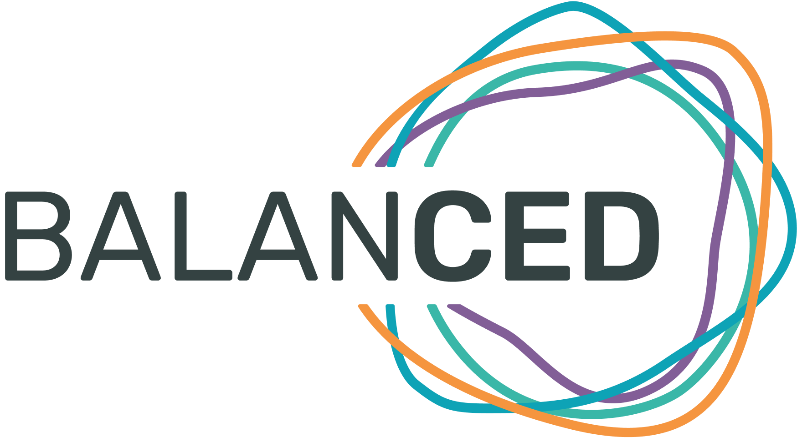

BalanCED ist eine mobile Lösung zur Vernetzung von Patienten, Ärzten und Gesundheitsinstitutionen und gestaltet somit das Gesundheits-Ökosystem der Zukunft - mit Ihnen im Zentrum.
Die Applikation wurde in Zusammenarbeit mit Ärzten und Patienten entwickelt und vereint eine Vielzahl von Funktionen, die Sie und Ihre individuellen Bedürfnissen entsprechend unterstüzt. BalanCED ermöglicht es Ihnen Ihre Krankheit aktiv und einfacher zu überwachen und Ihr Therapie- Management zu verbessern. So haben Sie ihren Krankheitsverlauf im Blick und einen direkten Kontakt zu Ihren Ärzten.
Bald findest du hier mehr Informationen